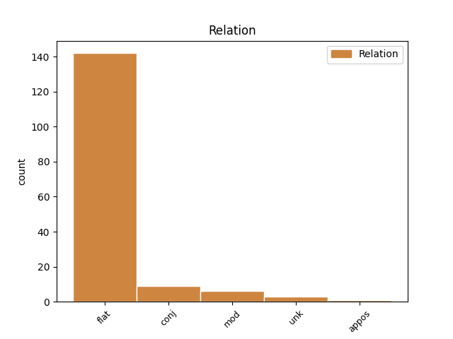
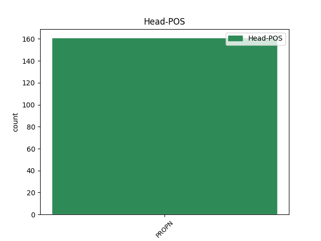
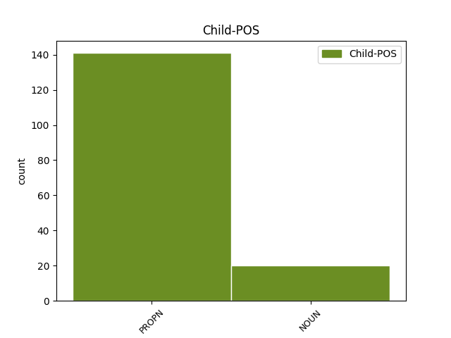

Distribution of features within this leaf



Agreement Rules sorted by frequency.
- When the dependent token is the flat multiword expression(flat) of the head token, and the head token is PROPN
1 In _ _ _ _ 0 _ _ _
2 dieselfde _ _ _ _ 0 _ _ _
3 asem _ _ _ _ 0 _ _ _
4 wil _ _ _ _ 0 _ _ _
5 ek _ _ _ _ 0 _ _ _
6 ook _ _ _ _ 0 _ _ _
7 graag _ _ _ _ 0 _ _ _
8 Me _ _ _ _ 0 _ _ _
9 Helen Helen PROPN NEE Number=Sing 0 _ _ _
10 Suzman Suzman PROPN NEE Number=Sing 9 flat _ _
11 noem _ _ _ _ 0 _ _ _
12 , _ _ _ _ 0 _ _ _
13 'n _ _ _ _ 0 _ _ _
14 waarlik _ _ _ _ 0 _ _ _
15 voortreflike _ _ _ _ 0 _ _ _
16 Suid-Afrikaner _ _ _ _ 0 _ _ _
17 wat _ _ _ _ 0 _ _ _
18 die _ _ _ _ 0 _ _ _
19 waardes _ _ _ _ 0 _ _ _
20 van _ _ _ _ 0 _ _ _
21 ons _ _ _ _ 0 _ _ _
22 nuwe _ _ _ _ 0 _ _ _
23 Parlement _ _ _ _ 0 _ _ _
24 reeds _ _ _ _ 0 _ _ _
25 in _ _ _ _ 0 _ _ _
26 die _ _ _ _ 0 _ _ _
27 ou _ _ _ _ 0 _ _ _
28 een _ _ _ _ 0 _ _ _
29 se _ _ _ _ 0 _ _ _
30 kamers _ _ _ _ 0 _ _ _
31 verteenwoordig _ _ _ _ 0 _ _ _
32 het _ _ _ _ 0 _ _ _
33 . _ _ _ _ 0 _ _ _
1 Vanjaar _ _ _ _ 0 _ _ _
2 vier _ _ _ _ 0 _ _ _
3 ons _ _ _ _ 0 _ _ _
4 die _ _ _ _ 0 _ _ _
5 10de _ _ _ _ 0 _ _ _
6 herdenking _ _ _ _ 0 _ _ _
7 van _ _ _ _ 0 _ _ _
8 die _ _ _ _ 0 _ _ _
9 instelling _ _ _ _ 0 _ _ _
10 van _ _ _ _ 0 _ _ _
11 diplomatieke _ _ _ _ 0 _ _ _
12 betrekkinge _ _ _ _ 0 _ _ _
13 tussen _ _ _ _ 0 _ _ _
14 Suid-Afrika Suid-Afrika PROPN NEE Number=Sing 0 _ _ _
15 en _ _ _ _ 0 _ _ _
16 die _ _ _ _ 0 _ _ _
17 Republiek republiek NOUN NSE Number=Sing 14 conj _ _
18 van _ _ _ _ 0 _ _ _
19 China _ _ _ _ 0 _ _ _
20 . _ _ _ _ 0 _ _ _
1 Tydens _ _ _ _ 0 _ _ _
2 'n _ _ _ _ 0 _ _ _
3 vergadering _ _ _ _ 0 _ _ _
4 met _ _ _ _ 0 _ _ _
5 die _ _ _ _ 0 _ _ _
6 Voorsitter _ _ _ _ 0 _ _ _
7 van _ _ _ _ 0 _ _ _
8 General General PROPN NEE Number=Sing 0 _ _ _
9 Electric _ _ _ _ 0 _ _ _
10 verlede _ _ _ _ 0 _ _ _
11 week week NOUN NSE Number=Sing 8 mod _ SpaceAfter=No
12 , _ _ _ _ 0 _ _ _
13 het _ _ _ _ 0 _ _ _
14 General _ _ _ _ 0 _ _ _
15 Electric _ _ _ _ 0 _ _ _
16 aangebied _ _ _ _ 0 _ _ _
17 om _ _ _ _ 0 _ _ _
18 hulp _ _ _ _ 0 _ _ _
19 te _ _ _ _ 0 _ _ _
20 verleen _ _ _ _ 0 _ _ _
21 deur _ _ _ _ 0 _ _ _
22 skaars _ _ _ _ 0 _ _ _
23 turbinetoerusting _ _ _ _ 0 _ _ _
24 namens _ _ _ _ 0 _ _ _
25 ons _ _ _ _ 0 _ _ _
26 aan _ _ _ _ 0 _ _ _
27 te _ _ _ _ 0 _ _ _
28 koop _ _ _ _ 0 _ _ _
29 . _ _ _ _ 0 _ _ _
1 Ons _ _ _ _ 0 _ _ _
2 sal _ _ _ _ 0 _ _ _
3 ook _ _ _ _ 0 _ _ _
4 voortgaan _ _ _ _ 0 _ _ _
5 om _ _ _ _ 0 _ _ _
6 'n _ _ _ _ 0 _ _ _
7 bydrae _ _ _ _ 0 _ _ _
8 te _ _ _ _ 0 _ _ _
9 lewer _ _ _ _ 0 _ _ _
10 tot _ _ _ _ 0 _ _ _
11 die _ _ _ _ 0 _ _ _
12 verwesenliking _ _ _ _ 0 _ _ _
13 van _ _ _ _ 0 _ _ _
14 die _ _ _ _ 0 _ _ _
15 doelwitte _ _ _ _ 0 _ _ _
16 van _ _ _ _ 0 _ _ _
17 die _ _ _ _ 0 _ _ _
18 Kyoto-protokol _ _ _ _ 0 _ _ _
19 op _ _ _ _ 0 _ _ _
20 Klimaatsverandering _ _ _ _ 0 _ _ _
21 en _ _ _ _ 0 _ _ _
22 voortdurende _ _ _ _ 0 _ _ _
23 verbeterings _ _ _ _ 0 _ _ _
24 in _ _ _ _ 0 _ _ _
25 hierdie _ _ _ _ 0 _ _ _
26 opsig _ _ _ _ 0 _ _ _
27 , _ _ _ _ 0 _ _ _
28 en _ _ _ _ 0 _ _ _
29 om _ _ _ _ 0 _ _ _
30 meer _ _ _ _ 0 _ _ _
31 stukrag _ _ _ _ 0 _ _ _
32 te _ _ _ _ 0 _ _ _
33 verleen _ _ _ _ 0 _ _ _
34 aan _ _ _ _ 0 _ _ _
35 die _ _ _ _ 0 _ _ _
36 onderhandelings _ _ _ _ 0 _ _ _
37 oor _ _ _ _ 0 _ _ _
38 die _ _ _ _ 0 _ _ _
39 Wêreldhandelsorganisasie _ _ _ _ 0 _ _ _
40 se _ _ _ _ 0 _ _ _
41 Doha Doha PROPN NEE Number=Sing 0 _ _ _
42 Ontwikkelingsrondte ontwikkelingsrondte NOUN NSE Number=Sing 41 unk _ SpaceAfter=No
43 . _ _ _ _ 0 _ _ _
1 Hierdie _ _ _ _ 0 _ _ _
2 stappe _ _ _ _ 0 _ _ _
3 sluit _ _ _ _ 0 _ _ _
4 onder _ _ _ _ 0 _ _ _
5 meer _ _ _ _ 0 _ _ _
6 die _ _ _ _ 0 _ _ _
7 volgende _ _ _ _ 0 _ _ _
8 in _ _ _ _ 0 _ _ _
9 : _ _ _ _ 0 _ _ _
10 'n _ _ _ _ 0 _ _ _
11 verlaging _ _ _ _ 0 _ _ _
12 van _ _ _ _ 0 _ _ _
13 die _ _ _ _ 0 _ _ _
14 koste _ _ _ _ 0 _ _ _
15 om _ _ _ _ 0 _ _ _
16 sake _ _ _ _ 0 _ _ _
17 te _ _ _ _ 0 _ _ _
18 doen _ _ _ _ 0 _ _ _
19 en _ _ _ _ 0 _ _ _
20 die _ _ _ _ 0 _ _ _
21 bevordering _ _ _ _ 0 _ _ _
22 van _ _ _ _ 0 _ _ _
23 beleggings _ _ _ _ 0 _ _ _
24 , _ _ _ _ 0 _ _ _
25 die _ _ _ _ 0 _ _ _
26 praktiese _ _ _ _ 0 _ _ _
27 inwerkingstelling _ _ _ _ 0 _ _ _
28 van _ _ _ _ 0 _ _ _
29 die _ _ _ _ 0 _ _ _
30 Regulatory Regulatory PROPN NEE Number=Sing 0 _ _ _
31 Impact _ _ _ _ 0 _ _ _
32 Assessment-stelsel _ _ _ _ 0 _ _ _
33 ( _ _ _ _ 0 _ _ _
34 RIA-stelsel RIA-stelsel NOUN NSE Number=Sing 30 appos _ SpaceAfter=No
35 ) _ _ _ _ 0 _ _ _
36 , _ _ _ _ 0 _ _ _
37 die _ _ _ _ 0 _ _ _
38 ontwikkeling _ _ _ _ 0 _ _ _
39 van _ _ _ _ 0 _ _ _
40 breëbandkapasiteit _ _ _ _ 0 _ _ _
41 vir _ _ _ _ 0 _ _ _
42 nasionale _ _ _ _ 0 _ _ _
43 en _ _ _ _ 0 _ _ _
44 internasionale _ _ _ _ 0 _ _ _
45 gebruik _ _ _ _ 0 _ _ _
46 , _ _ _ _ 0 _ _ _
47 die _ _ _ _ 0 _ _ _
48 finalisering _ _ _ _ 0 _ _ _
49 van _ _ _ _ 0 _ _ _
50 planne _ _ _ _ 0 _ _ _
51 wat _ _ _ _ 0 _ _ _
52 spoor- _ _ _ _ 0 _ _ _
53 en _ _ _ _ 0 _ _ _
54 haweoperateurs _ _ _ _ 0 _ _ _
55 se _ _ _ _ 0 _ _ _
56 kapasiteit _ _ _ _ 0 _ _ _
57 sal _ _ _ _ 0 _ _ _
58 verhoog _ _ _ _ 0 _ _ _
59 , _ _ _ _ 0 _ _ _
60 en _ _ _ _ 0 _ _ _
61 die _ _ _ _ 0 _ _ _
62 verbetering _ _ _ _ 0 _ _ _
63 van _ _ _ _ 0 _ _ _
64 ons _ _ _ _ 0 _ _ _
65 mededingingsowerhede _ _ _ _ 0 _ _ _
66 se _ _ _ _ 0 _ _ _
67 doeltreffendheid _ _ _ _ 0 _ _ _
68 . _ _ _ _ 0 _ _ _
Disagree Examples:
1 In _ _ _ _ 0 _ _ _
2 hierdie _ _ _ _ 0 _ _ _
3 verband _ _ _ _ 0 _ _ _
4 sal _ _ _ _ 0 _ _ _
5 ons _ _ _ _ 0 _ _ _
6 ook _ _ _ _ 0 _ _ _
7 voortgaan _ _ _ _ 0 _ _ _
8 om _ _ _ _ 0 _ _ _
9 met _ _ _ _ 0 _ _ _
10 die _ _ _ _ 0 _ _ _
11 leiers _ _ _ _ 0 _ _ _
12 van _ _ _ _ 0 _ _ _
13 die _ _ _ _ 0 _ _ _
14 mense _ _ _ _ 0 _ _ _
15 van _ _ _ _ 0 _ _ _
16 Palestina _ _ _ _ 0 _ _ _
17 , _ _ _ _ 0 _ _ _
18 Israel _ _ _ _ 0 _ _ _
19 , _ _ _ _ 0 _ _ _
20 Irak _ _ _ _ 0 _ _ _
21 , _ _ _ _ 0 _ _ _
22 Iran Iran PROPN NEE Number=Sing 0 _ _ _
23 en _ _ _ _ 0 _ _ _
24 ander _ _ _ _ 0 _ _ _
25 lande land NOUN NSM Number=Plur 22 conj _ _
26 in _ _ _ _ 0 _ _ _
27 die _ _ _ _ 0 _ _ _
28 Midde-Ooste _ _ _ _ 0 _ _ _
29 en _ _ _ _ 0 _ _ _
30 die _ _ _ _ 0 _ _ _
31 Persiese _ _ _ _ 0 _ _ _
32 Golf _ _ _ _ 0 _ _ _
33 gesprek _ _ _ _ 0 _ _ _
34 te _ _ _ _ 0 _ _ _
35 voer _ _ _ _ 0 _ _ _
36 . _ _ _ _ 0 _ _ _
1 Ons _ _ _ _ 0 _ _ _
2 sal _ _ _ _ 0 _ _ _
3 ook _ _ _ _ 0 _ _ _
4 ons _ _ _ _ 0 _ _ _
5 verhouding _ _ _ _ 0 _ _ _
6 met _ _ _ _ 0 _ _ _
7 ander _ _ _ _ 0 _ _ _
8 lande _ _ _ _ 0 _ _ _
9 op _ _ _ _ 0 _ _ _
10 hierdie _ _ _ _ 0 _ _ _
11 kontinent _ _ _ _ 0 _ _ _
12 , _ _ _ _ 0 _ _ _
13 en _ _ _ _ 0 _ _ _
14 met _ _ _ _ 0 _ _ _
15 ons _ _ _ _ 0 _ _ _
16 vennote _ _ _ _ 0 _ _ _
17 in _ _ _ _ 0 _ _ _
18 Indië _ _ _ _ 0 _ _ _
19 , _ _ _ _ 0 _ _ _
20 Brasilië _ _ _ _ 0 _ _ _
21 en _ _ _ _ 0 _ _ _
22 die _ _ _ _ 0 _ _ _
23 Volksrepubliek _ _ _ _ 0 _ _ _
24 van _ _ _ _ 0 _ _ _
25 China China PROPN NEE Number=Sing 0 _ _ _
26 , _ _ _ _ 0 _ _ _
27 ander _ _ _ _ 0 _ _ _
28 lande land NOUN NSM Number=Plur 25 conj _ _
29 in _ _ _ _ 0 _ _ _
30 die _ _ _ _ 0 _ _ _
31 Suide _ _ _ _ 0 _ _ _
32 , _ _ _ _ 0 _ _ _
33 asook _ _ _ _ 0 _ _ _
34 Japan _ _ _ _ 0 _ _ _
35 , _ _ _ _ 0 _ _ _
36 Europa _ _ _ _ 0 _ _ _
37 en _ _ _ _ 0 _ _ _
38 Noord-Amerika _ _ _ _ 0 _ _ _
39 , _ _ _ _ 0 _ _ _
40 verder _ _ _ _ 0 _ _ _
41 verstewig _ _ _ _ 0 _ _ _
42 . _ _ _ _ 0 _ _ _